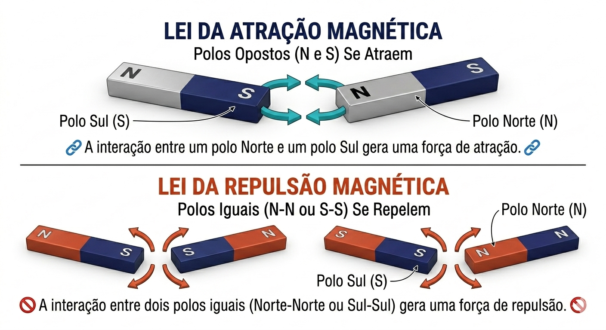
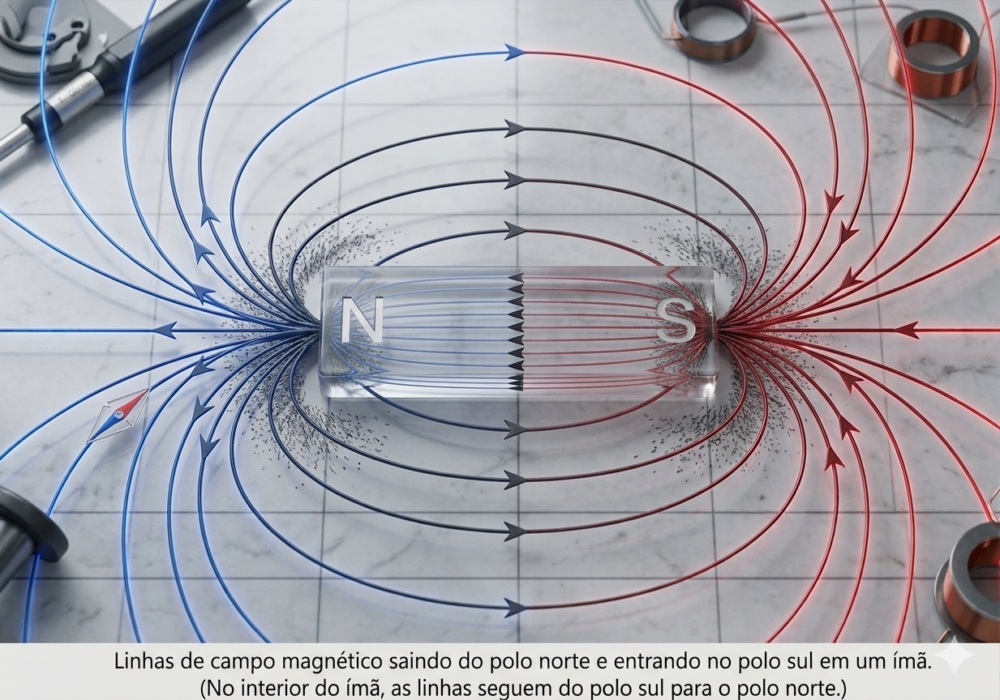

O que é o Magnetismo?
Se a eletrodinâmica estuda os elétrons em movimento pelos fios, o Magnetismo nos introduz a uma força invisível capaz de atrair ou repelir materiais sem a necessidade de contato físico. Na natureza, certos materiais possuem essa propriedade de forma intrínseca, sendo chamados de ímãs.
Todo ímã, não importa o seu formato, possui duas regiões onde a força magnética é mais intensa. Chamamos essas regiões de Polos Magnéticos:
- Polo Norte (N) e Polo Sul (S).
- Lei da Atração e Repulsão: Polos opostos se atraem e polos iguais se repelem.

O Princípio da Inseparabilidade: Diferente da eletricidade, onde você pode isolar um elétron (carga negativa), não existem monopolos magnéticos na natureza. Se você pegar um ímã e quebrá-lo exatamente ao meio, você não ficará com um Polo Norte em uma mão e um Polo Sul na outra. Cada pedaço se reorganizará imediatamente, formando dois novos ímãs completos, cada um com seu próprio Norte e Sul!
O Campo Magnético ($\vec{B}$)
A força de um ímã não age apenas quando ele encosta no metal. Ele cria uma "zona de influência" tridimensional ao seu redor, que chamamos de Campo Magnético (representado na física pela letra $\vec{B}$).
Para visualizar essa força invisível, utilizamos o conceito de Linhas de Força (ou linhas de indução). Por convenção física, essas linhas de energia nascem no Polo Norte e morrem no Polo Sul na parte externa do ímã.

A intensidade do campo magnético é medida no Sistema Internacional (SI) em Tesla (T). Outra unidade muito comum, porém menor, é o Gauss (G), onde:
$$1 \text{ Tesla} = 10.000 \text{ Gauss}$$
Ressonância Magnética (RM): O planeta Terra é um ímã gigante, mas seu campo magnético é fraco, medindo cerca de $0.00005 \text{ T}$ (50 µT). Já um equipamento de Ressonância Magnética clínico opera com campos entre $1.5 \text{ T}$ e $3.0 \text{ T}$. Ou seja, ao entrar na sala de RM, o paciente está sendo submetido a um campo magnético dezenas de milhares de vezes mais forte que o da própria Terra!
Classificação Magnética dos Materiais
Como os diferentes elementos da tabela periódica reagem quando são colocados dentro de um campo magnético? A resposta microscópica está na forma como os elétrons giram (spin) ao redor de seus átomos. Baseado nisso, dividimos os materiais em três grandes famílias:
Como os Materiais Reagem ao Ímã?
Ferromagnéticos
São fortemente atraídos pelo campo magnético. Seus átomos se alinham perfeitamente com o ímã.
Ex: Ferro, Cobalto, Níquel.
Paramagnéticos
São fracamente atraídos. A atração existe, mas é tão pequena que mal percebemos no dia a dia.
Ex: Alumínio, Gadolínio, Platina.
Diamagnéticos
São fracamente repelidos pelo campo magnético. Eles tentam fugir do ímã, gerando um campo oposto mínimo.
Ex: Água, Cobre, Ouro.
Aplicação Crítica na Radiologia: Segurança e Contraste
Entender a classificação magnética dos materiais não é apenas teoria; é uma questão de vida ou morte dentro do setor de imagem!
- O Efeito Míssil (Segurança): O magneto de uma máquina de Ressonância Magnética fica sempre ligado. Se um maqueiro entrar na sala com um cilindro de oxigênio ou uma cadeira de rodas feita de aço comum (material Ferromagnético), o equipamento atrairá esse objeto com uma força violenta, transformando-o em um míssil fatal. Por isso, as salas de RM exigem rigorosos testes com detectores de metal.
- Meios de Contraste (Gadolínio): Na RM, não usamos iodo como na tomografia. Utilizamos o Gadolínio. Lembra da classificação dele? Ele é um elemento Paramagnético. Ao ser injetado no paciente, ele altera levemente o campo magnético local dos tecidos patológicos, fazendo com que tumores e lesões "brilhem" e se destaquem na imagem gerada!